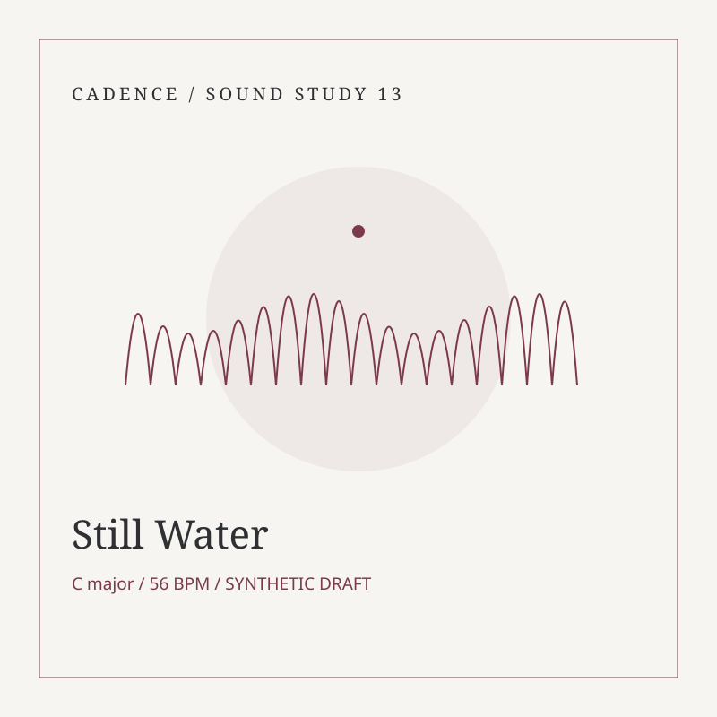
Cadence / prepared media / 2026-11-15
A quiet place to begin.
Sixteen instrumental arrangements for a small offline focus space, including four longer, sparse Slow Pages sketches. These are synthetic sound studies with editable notes, not live recordings or implemented app features.
Source and review notes · Desktop proposal · Artwork library
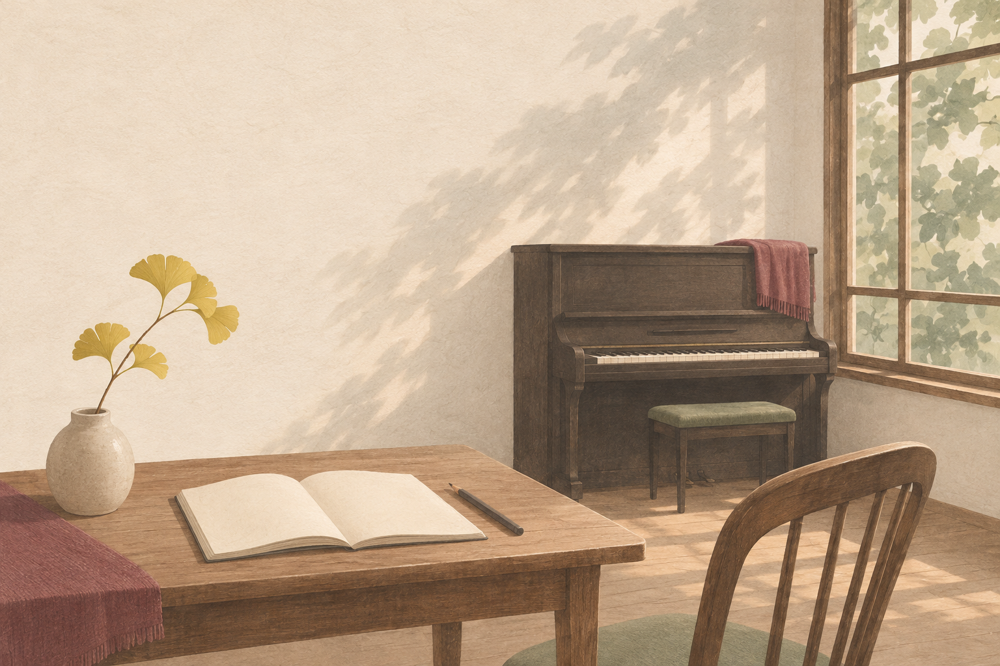
Sound is off until you press Play. Tracks have natural ending tails; seamless loops are not certified. Human listening review is pending. All playback files are local.
Slow Pages
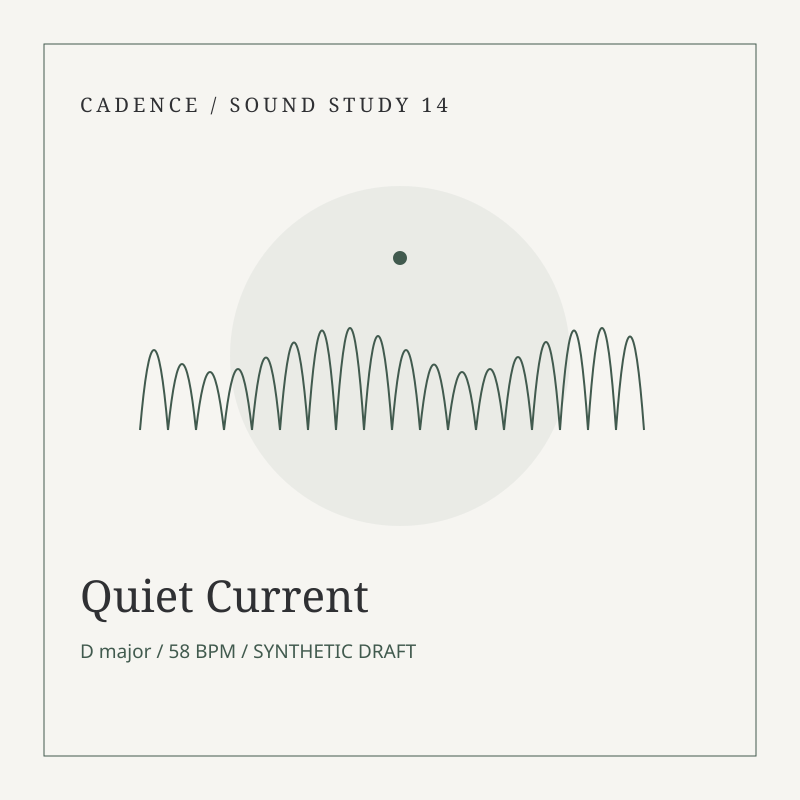
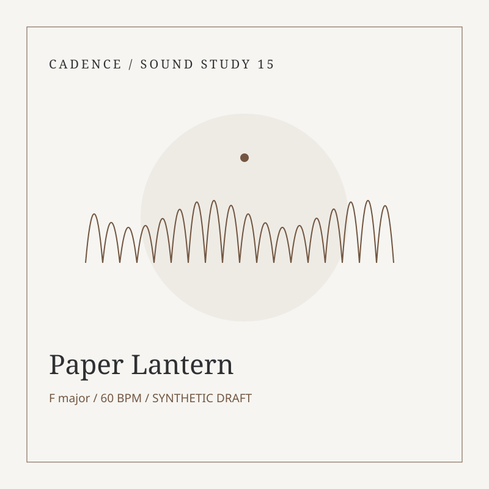
Paper Piano
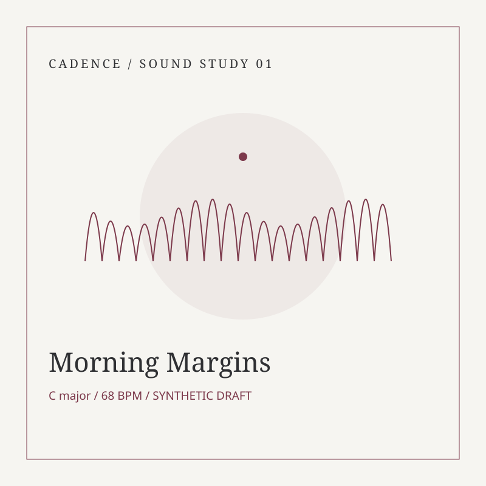
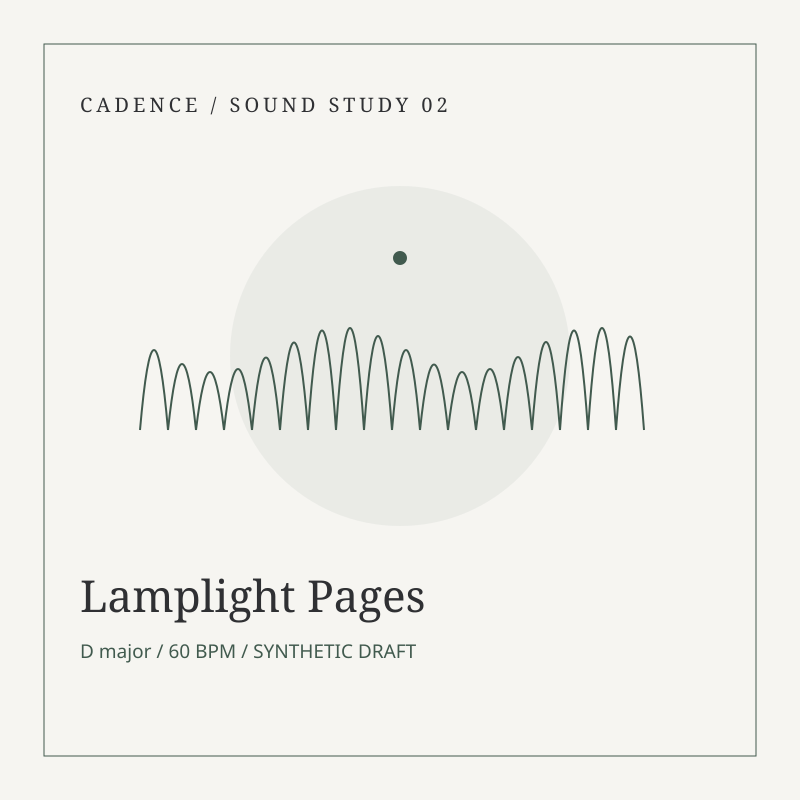
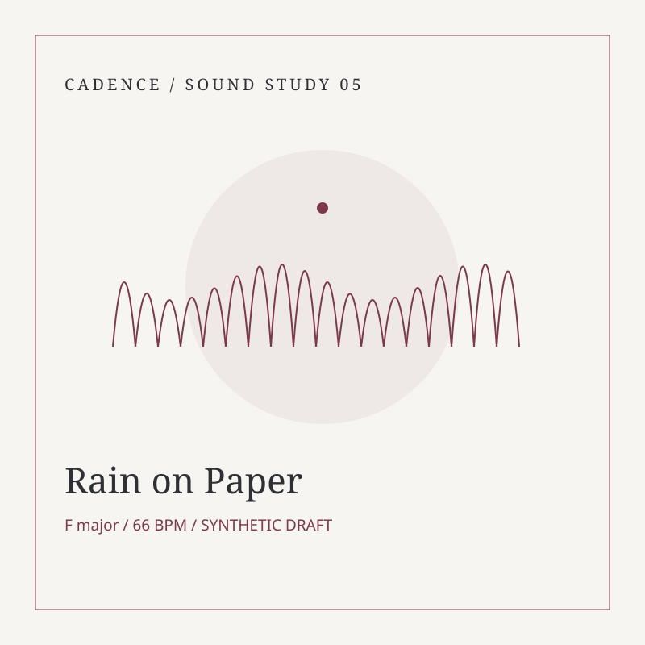
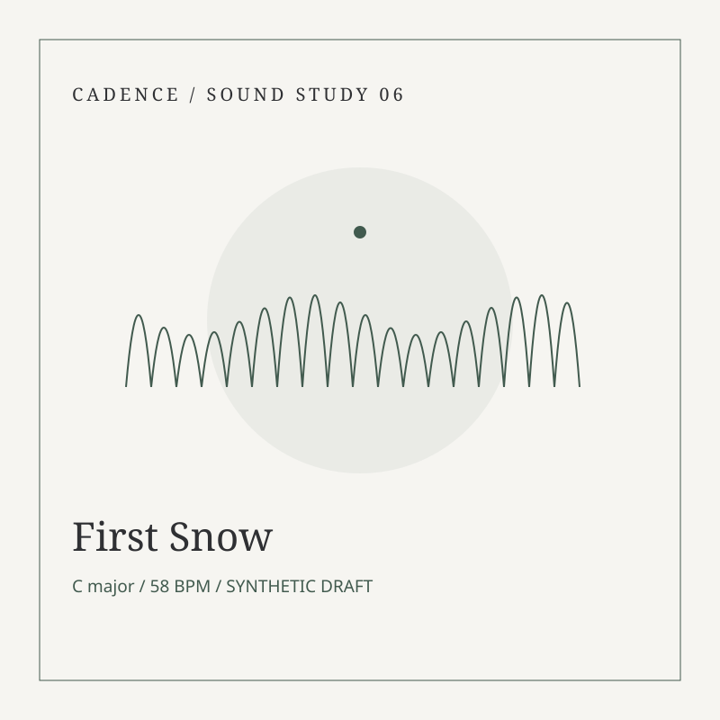
Wood and Air
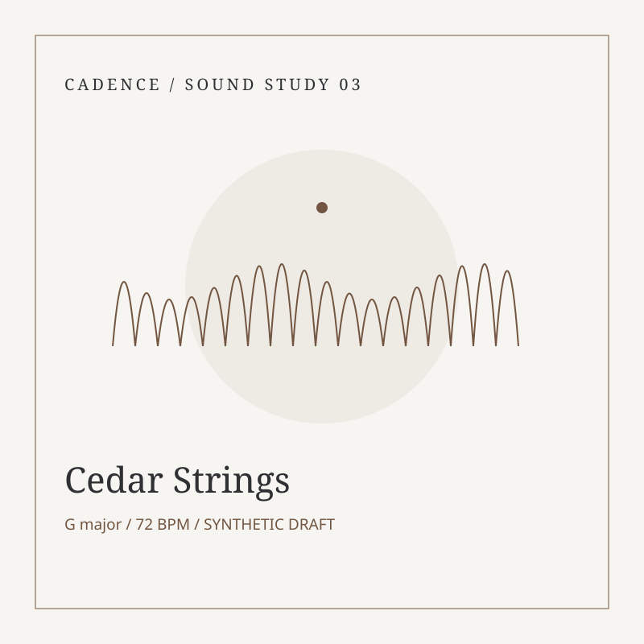
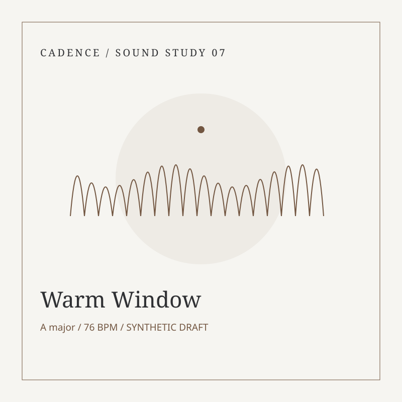
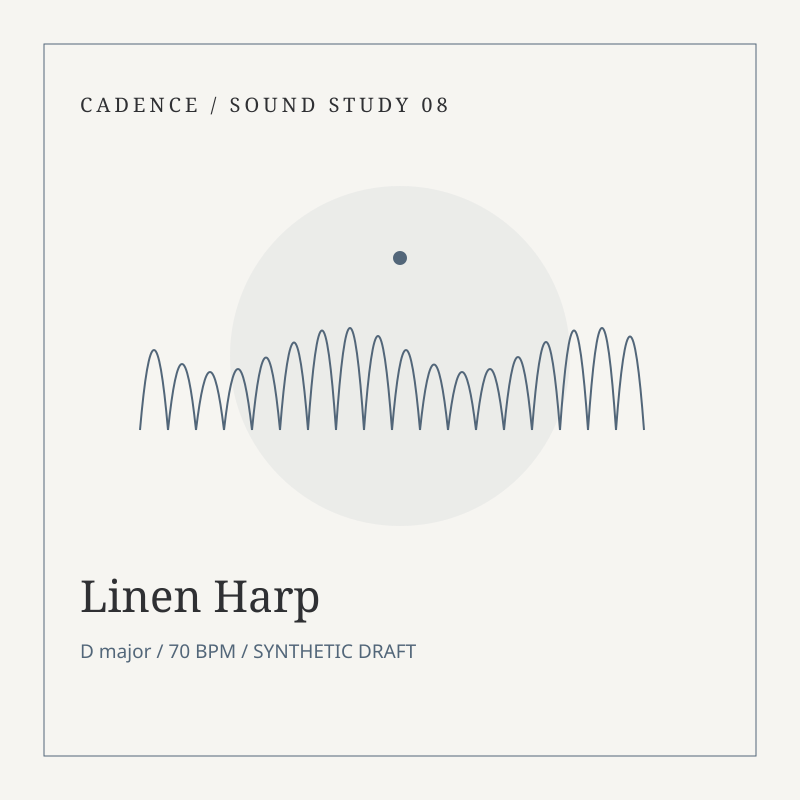
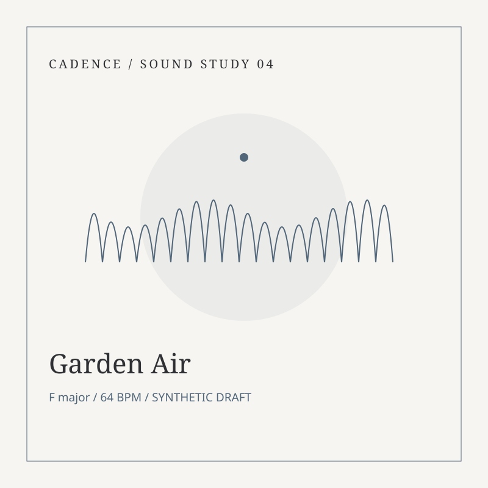
Evening Notes
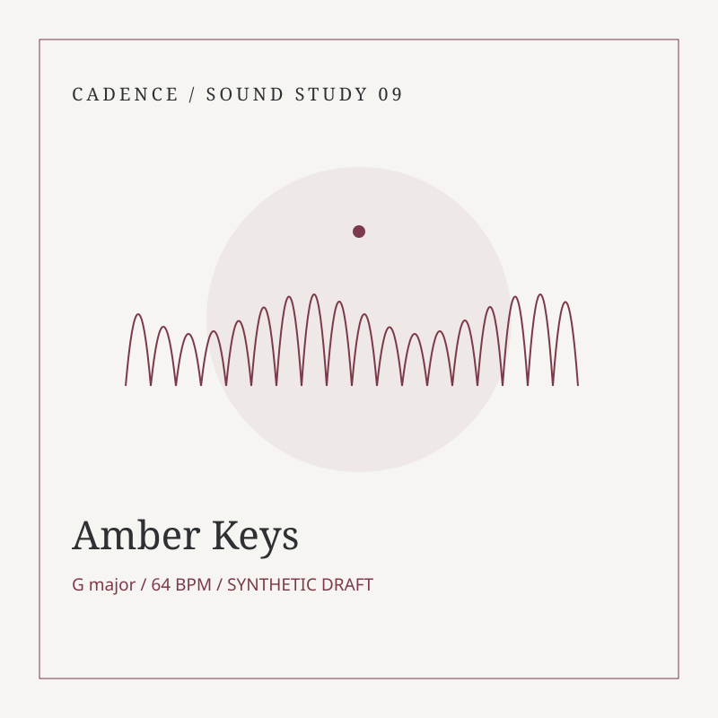
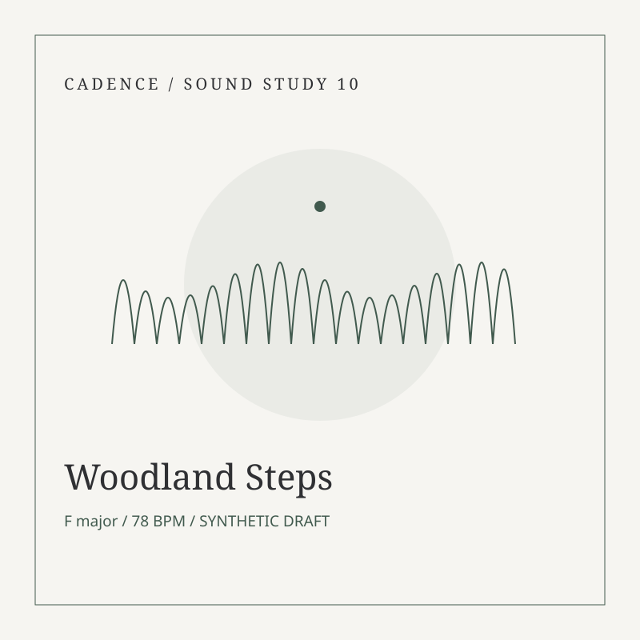
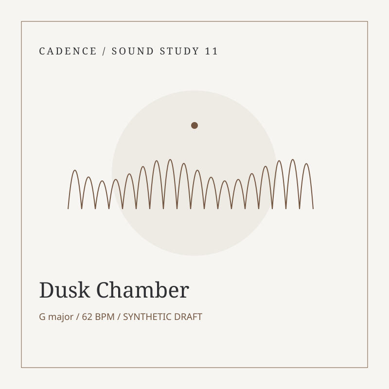
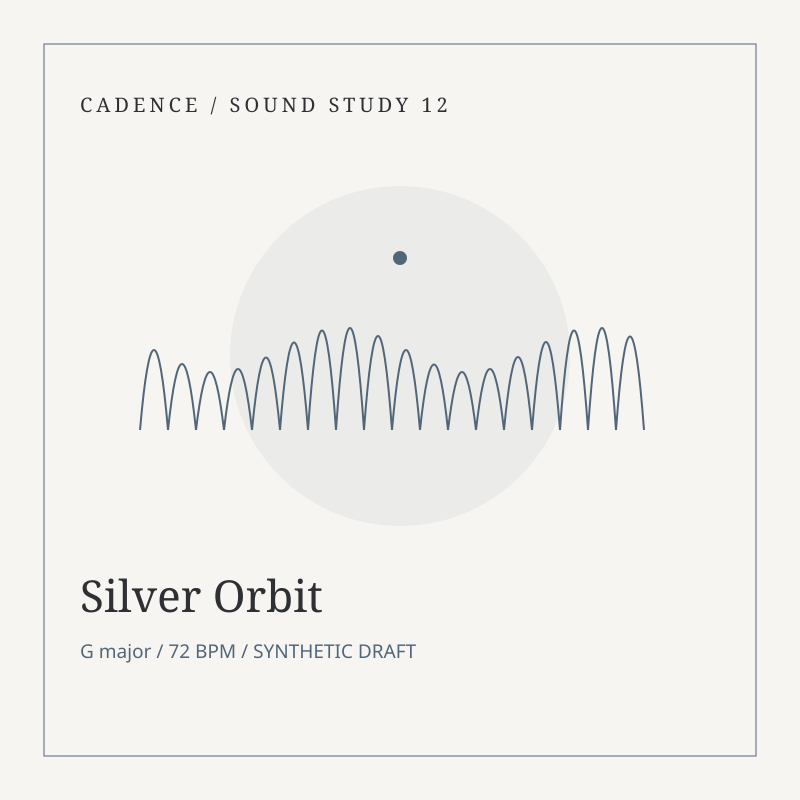